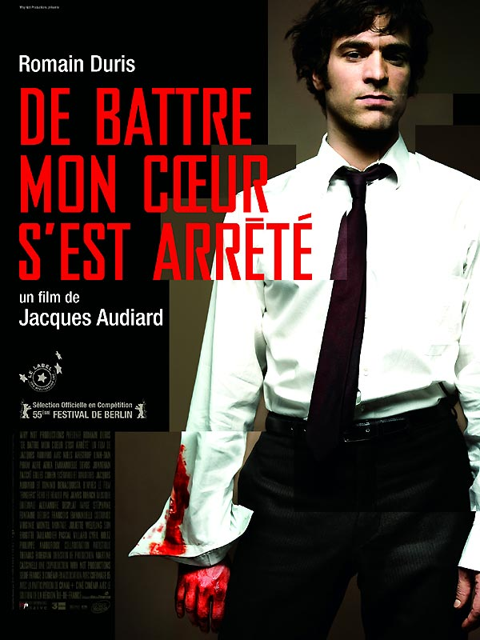

Sébastien Carnélos
Webdeveloper & Designer
During two months, I've learned web development at Le Wagon Bordeaux. This was one of the best professional experience of my life. This profile page was done during the fourth week of training and updated once it was over.

Stuff I've done during Le Wagon's 9 week
(done with great teams of four junior developer like me)
|  |
De battre mon coeur s'est arrêtéAlors en fait c'est l'histoire d'un gars qui aime écouter du Bloc Party quand il marche dans la rue et puis aussi il flash un peu sur la femme de son collègue avec qui il fait un travaille bizarre pour vendre des maisons. Et donc un jour il se décide à jouer du piano mais son papa il s'en fout et puis sa maman elle est morte. |